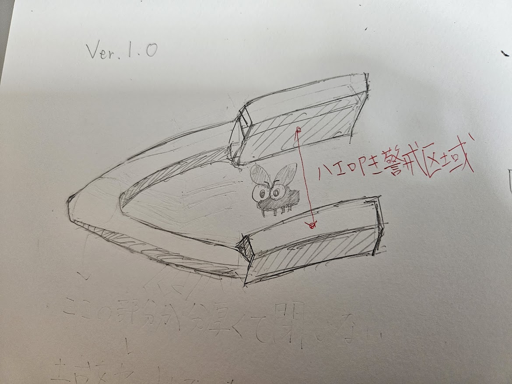
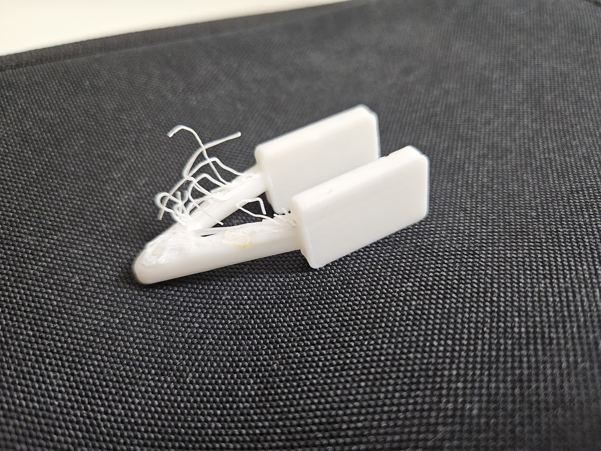
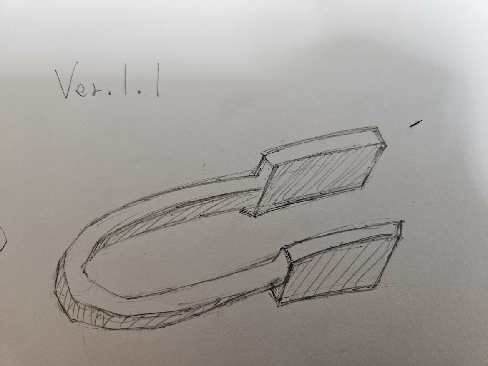
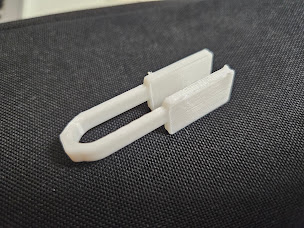

第一回 課題
1.タイトル
→ハエ叩きピンセット（１/10スケール） ⭐️命名=ハエ叩き警戒区域 （by排他的経済水域）
2.スケッチ＋実物の画像
ver.1.0
 
『失敗』
・支えの部分が太くて閉じない
・土台を作らなかったので上手にプリントできない
ver.1.1
 
『成功』
・支えの部分に丸みを持たせた
・プリント設定からビルドプレート接着タイプを「スカート」に変更
3.stlファイル
4.作品の説明
ハエ叩きピンセット、通称ハエ叩き警戒区域はその名の通り飛んでいるハエを片手で潰せる画期的なアイテムだ。
今回は大きさに制限があるため通常の１/10くらい？のサイズで作ったが、実際はもっとデカい。叩く部分が平らだが、
敢えてギザギザにし空気抵抗を無くして簡単に潰せるようにするつもりだ。
5.なぜこの作品を作ろうという想いに至ったか
今年ハエに刺されまくったので、奴らに復讐するためにこの作品を考えた。手で捕まえるのは難しいし奴らに必死になるのもシャクなので、
片手間に指２本で潰せる方法を模索した結果この作品が完成した。実物ができていないので何とも言えないが、私的には革命的アイテムだと思う。
6.制作プロセスの中で調べたこと
Curaの使い方と土台の作り方
スライサーソフト「CURA」基本操作!